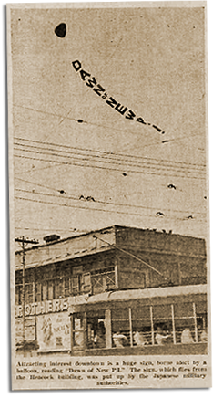

|
j
a v a s c r i p t |
January 31, 1942

"Dawn of New P.I." Balloon
Hoisted by the Japanese Flies over the Heacock Building. This afternoon, a hit-and-run truck threw Dad against a carromata and bicycle. Though 70 years old and bleeding profusely from a severe cut on his forehead, he stumbled 300-meters home unaided. Dr. Ayesa took him to the Singian Clinic for four stitches. Standing in front of the store this morning, I observed a loaded Japanese truck park in front of a little store. Troops entered and commandeered 10 to 15 Philco radios (table models) in their original boxes — just like that. I couldn’t get KGEI so tuned in to BBC for some depressing news. British forces left Malaya uncovered and retreated to Singapore for a final stand. The papers say the city is already facing a famine. Elsewhere, the Japanese seem to be slowing down; or maybe the holdouts in Bataan have upset their plans. Over here, more Japanese troops left Manila for the front, where we hope they’ll enjoy a peaceful and extended rest. |
|
|
|
|